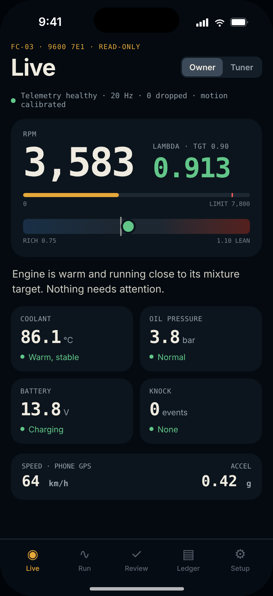
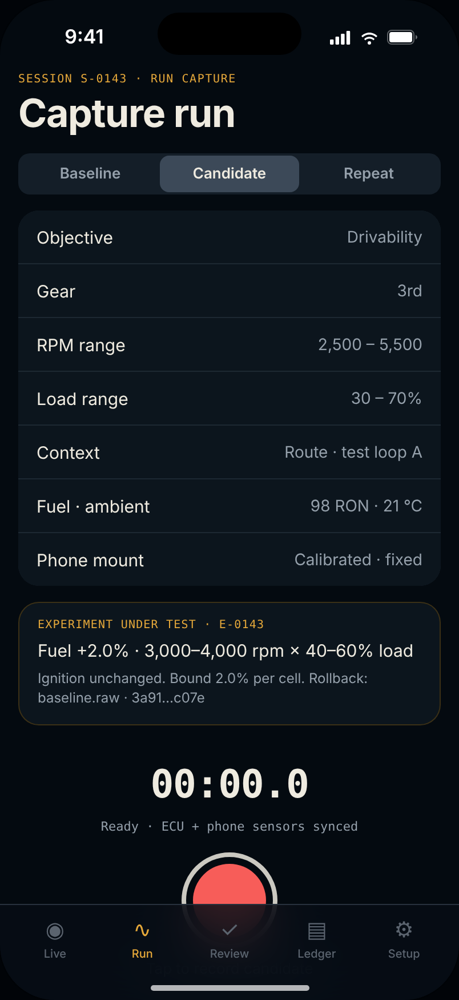
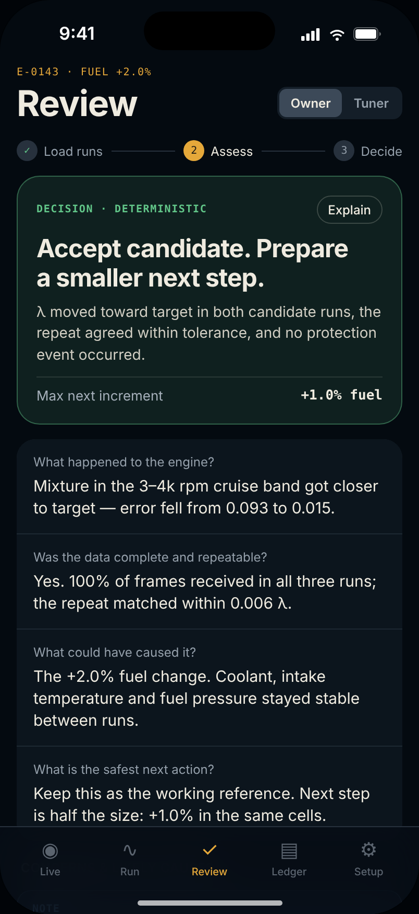
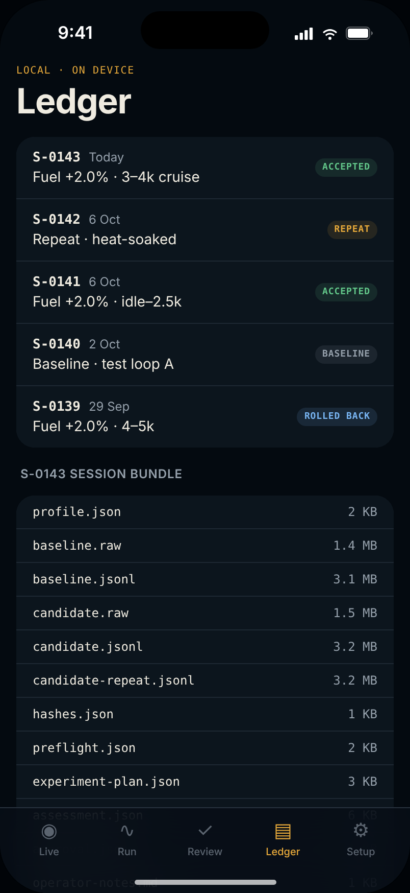
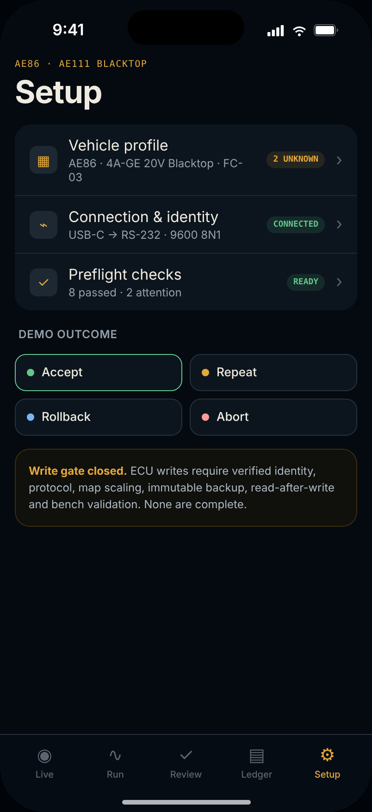
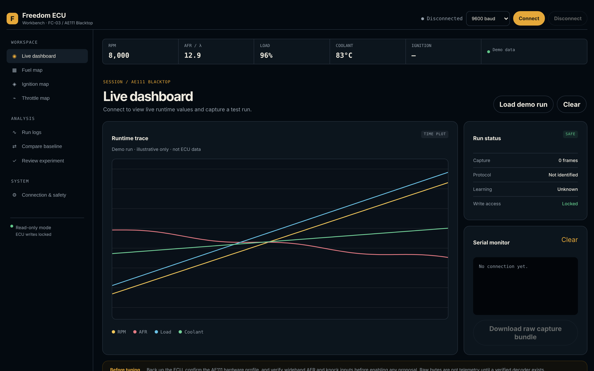
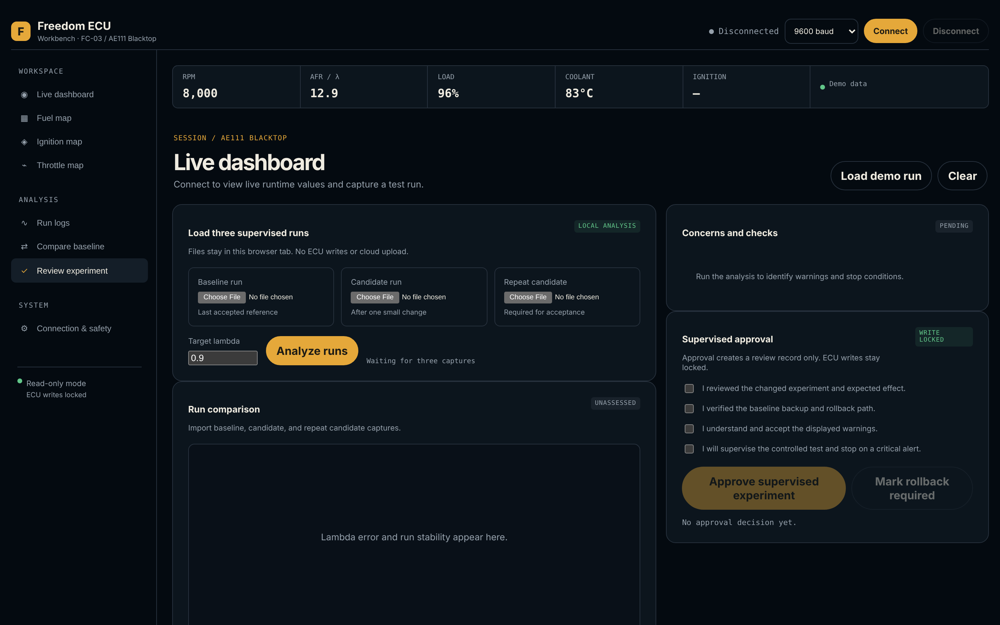
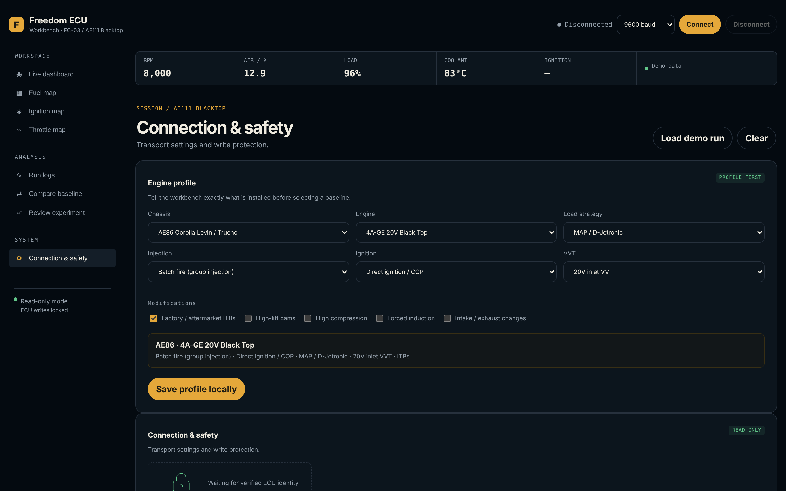

GRASSROOTS ENGINE MANAGEMENT · FREEDOM FC-03 FIRST
Unsupported is not obsolete.
Many good standalone ECUs sit unused because their software stopped years ago. AhhPuck gives them modern logging and safe, step-by-step tuning. We start with the Freedom FC-03 on a 4A-GE 20V. The same process will then work for other ECUs.
- Lower cost · second-hand ECU, modern tools
- Better logging · more than the original software ever gave
- Safer tuning · one small, reversible step at a time

THE APP, AS BUILT
Five screens. One read-only session.
These are real captures of the AhhPuck mobile build, not drawings. The numbers come from the local test fixture.




MAC WORKBENCH
The bench view, in a browser.
Works in Chrome or Edge over USB serial. Live trace, run status, serial monitor and experiment review. ECU writes are locked.
Open the workbench →


HOW IT WORKS
One loop, from plug-in to a proven improvement.
The app, the workbench and the command-line tools all follow this loop. Every step leaves a file on disk, so nothing is lost.
SAFETY LIMITS
Limits are set before the engine starts.
These values come from the safety policy file the tools enforce. They are provisional and must be checked for your engine, but they are never invented on the spot.
- never learn from a run with a protection fault
- never change fuel and ignition in the same experiment
- never guess unknown cells without a review flag
- never let an AI authorize an ECU write
- always keep the source map, the diff and a rollback copy
- Max fuel change per cell
2.0 % - Max ignition change per cell
1.0 ° - Max RPM
7 800 - Max coolant
105 °C - Max intake air temp
65 °C - Min battery voltage
12.0 V - Max knock level
0.15 - Min oil pressure under load
180 kPa
- original map backed up
- engine profile checked
- injector data checked
- fuel pressure checked
- wideband calibrated
- ignition offset checked
- sensors plausible
- logs repeatable
LEARNING FROM EVIDENCE
An improvement only counts when it repeats.
Each round compares a baseline, a candidate and a repeat of the candidate. The result goes into a ledger that only grows. A run with a fault is never reused.
Lambda error by run
telemetry_stats.pyExample numbers from the sample captures. Repeatability is checked separately.
Quality gate
target 96 %- Objective score
- Safety-pass fraction
- Map coverage
- Repeatability
- Sensor confidence
Missing evidence counts as zero. A few good dyno pulls, or an AI opinion, can never reach the target alone.
Learning ledger
append-only#01baseline capturedclean#02fuel 11×7 −1.5 %improved · repeated#03fuel 11×8 −1.5 %not repeatable#04fuel 11×8 −0.8 %improved · repeated#05knock in runaborted · not reused
If a step does not repeat, the next one is smaller. If protection fires, nothing is learned from that run.
WHAT IS BUILT, DEFINED AND IN PROGRESS
Honest status, straight from the repository.
Built
- Map parserreads every Freedom base map into JSON
- Telemetry statisticslambda error, improvement, repeatability, coverage, knock
- Iteration assessorbaseline → candidate → repeat decision
- Safety gateenforces the limits and required evidence
- Concept optimizerdrift, grip, 0–100 or top-speed goals, fuel only
- Learning ledgeroffline, deterministic, append-only
- iOS corereadiness, trial state machine, assessment, dashboard
- Mac corelive safety monitor with watchdog, recorder, serial port
- Browser workbenchread-only capture and experiment review
Defined
- Tuning workflowbaseline, proposal, controlled run, assessment, rollback
- Safety policyhard limits, required evidence, write blockers, rules
- Telemetry modelunits, timestamps, gaps, plausibility
- Shared core contracttransport, decoder, safety monitor, recorder, optimizer gate, write controller
- User stories and release gatesowner, tuner and developer journeys
- Evidence labelsdocumented · observed · inferred · unverified
In progress
- FC-03 identity captureread-only serial at 9600 bps
- Frame decoderversion and profile aware, read-only
- iOS USB transportplaceholder today, Wi-Fi bridge as fallback
- SwiftUI screenslive, run, review, approval, setup
Not yet
- Any ECU writeblocked until protocol, checksum and human approval are proven
- Ignition proposalsneed a verified timing offset and knock evidence
- A second ECUonly after the FC-03 trial produces real results
TESTING
The safety claims are tests, not slogans.
Python tests cover the analysis tools. Swift tests cover the iOS workflow and the Mac live monitor. Every name on the right is a real test in the repository.
# run them
python3 -m unittest discover -s tools -p "test_*.py"
cd ios-app && swift test
cd mac-app && swift testPython · tools
- test_no_table_is_assigned_a_guess
- test_common_base_map_structure
- test_compare_requires_repeat_run
- test_compare_reports_improvement
- test_repeatability
- test_summary_and_completeness
- test_record_is_append_only_and_queryable
- test_critical_report_is_not_reusable
Swift · iOS core
- testDashboardIsAlwaysReadOnly
- testCriticalFrameIsMarkedAborted
- testUSBTransportDoesNotPretendToWork
- testReadinessStopsOnCriticalFault
- testReadinessPausesOnMissingFuelPressureAndIgnitionReference
- testTrialCannotCaptureBeforeReadiness
- testFirstTrialRunsEndToEndWithoutEnablingWrites
- testExperimentAssessmentRequiresRepeatableImprovement
- testExperimentAssessmentAbortsOnKnock
Swift · Mac core
- testWriteIsBlockedInReadOnlyMode
- testLiveMonitorAbortsOnKnock
- testLiveMonitorWatchdogAborts
- testRecoveredSettings
THE BIGGER GOAL
One process. Many unsupported ECUs.
The Freedom FC-03 is the proving ground. Once the loop is proven on a real car, the same parts become adapters for other good ECUs that lost their software, not their value.
- Transport adapter
- Frame decoder
- Live safety monitor
- Session recorder
- Optimizer gate
- Learning ledger
Candidate ECUs are listed in the repository. None starts development until the FC-03 trial passes its gates.
RELEASE GATES · FC-03 TRIAL
Nine gates before a single write.
Each gate must pass before the next is considered. A working dashboard is never proof of a safe tune.
- 1Replay and simulated data
- 2USB detection without ECU commands
- 3Read-only ECU identity
- 4Read-only live monitor and logging
- 5Fault tests: disconnect, stale data, bad sensors, power loss
- 6Car check at idle and light load
- 7Load testing with independent instruments
- 8Human-reviewed proposals
- 9Only then, one restricted write experiment
GET STARTED
Begin with a baseline you can trust.
Clone the repository, open the workbench, and try the full first-trial flow with the included sample data before any ECU is connected.
# compare two local captures, no AI service needed
python3 tools/telemetry_stats.py \
tools/examples/baseline-telemetry.json \
tools/examples/candidate-telemetry.json \
--candidate-repeat tools/examples/candidate-repeat-telemetry.json \
--output notes/telemetry-comparison.json